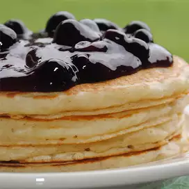

Pancake

A very light and fluffy pancake that requires fresh buttermilk, but it's the best I've ever made!
Ingredients
- 3 cups all-purpose flour
- 3 tablespoons white sugar
- 1½ teaspoons baking soda
- 3 teaspoons baking powder
- ¾ teaspoon salt
- 3 cups buttermilk
- ½ cup milk
- 3 eggs
- ⅓ cup butter, melted
Steps
- In a large bowl, combine flour, sugar, baking powder, baking soda, and salt. In a separate bowl,
beat together buttermilk, milk, eggs and melted butter. Keep the two mixtures separate
until you are ready to cook.
- Heat a lightly oiled griddle or frying pan over medium high heat. You can flick water across the
surface and if it beads up and sizzles, it's ready!
- Pour the wet mixture into the dry mixture, using a wooden spoon or fork to blend.
Stir until it's just blended together. Do not over stir! Pour or scoop the batter onto
the griddle, using approximately 1/2 cup for each pancake. Brown on both sides and serve hot.